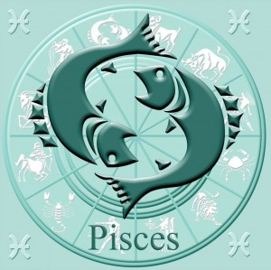
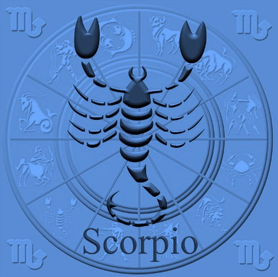

CÁNCER (DEL 21 DE JUNIO AL 22 DE JULIO)
Los nacidos en el signo de Cáncer son sinceros, amantes del hogar, de la vida de familia y la tranquilidad doméstica. Estas personas son, también, solidarias dedicándose a menudo a causas humanitarias Sin embargo, sus actitudes y aún sus objetivos pueden ser tan cambiables como el planeta gobernante del signo,la Luna.
Además, son muy apegados a la tradición como si fuera parte de ella. Es decir, aman el pasado y algunas veces viven prácticamente en él, lo que explica la forma en que buscan lo nuevo, pero retornan siempre a lo viejo.
Las personas nacidas bajo es signo de Cáncer son muy sensibles, aunque frecuentemente no lo demuestra. Las discusiones y peleas los abruman, las críticas los afectan y, como caracoles, se refugian en su concha.
Aunque son conservadoras, les gustan, también, las diversiones y la vida social. Sus actitudes pueden varías de día y de noche y aún los cambios del tiempo pueden afectar su naturaleza.
Su lealtad a los amigos y familia es constante, a menos que sienta que ha sido despreciado, ya sea de forma real o imaginaria. Aunque la otra persona se disculpe, no vuelve a sentirse como antes. Por ello, debe evitar todo rencor porque son sentimientos negativos que lo pueden afectar.
En los negocios, las personas de este signo tienen éxito en actividades ya establecidas. Tienen buen éxito como industriales y comerciantes, porque para ellas la calidad es importante y se enorgullecen de su nombre. Como profesionales, son buenos maestros, bibliotecarios, historiadores y hombres de ciencia.
PISCIS (DE 20 DE FEBRERO AL 20 DE MARZO)

Es el signo más modesto, humilde y confiado del zodíaco. Son personas que no quieren demostrar sus conocimientos considerándolo de poca importancia y creyendo que otros individuos que hacen alardes de sus capacidades deben realmente saber más que ellas y es que el planeta gobernante, Júpiter, da a estas gentes una naturaleza tan generosa que los convierte en demasiado confiadas.
En este sentido, se atienen a las promesas de otras gentes y son, con frecuencia, fácilmente engañadas. Además, son culpadas por los errores de otros, que descargan su peso en los bondados nacidos bajo Piscis. A menudo, son víctima de sutiles de ingeniosos complots, que ni sospechan.
Sin embargo, tienen varios factores salvadores en este signo. Una es la tendencia a ser optimistas inspirada por Júpiter y es que estas personas nacidas bajo ese signo pasan sobre grandes dificultades como si fueran insignificantes.
Por el otro lado, son muy apreciados por sus amigos y las gentes buenas en general, que lo ayudan a hacer resaltar sus puntos.
La calma y la paciencia son otros de los factores de los nativos de este signo que los ayuda a obtener el éxito sobre otros signos que se desvanecen en sus intenciones por carecer de esas dos cualidades.
No deben oír nunca a solicitudes persuasivas a su generosidad, sino estudiar los hechos, llegar por si mismas a conclusiones y luego, si es necesario, deben buscar el consejo de amigos probados e imparciales.
Los nacidos bajo el signo de Piscis son profundos en su devoción a los amigos y familiares, aun bajo las circunstancias más desfavorables. No se dejan aminorar en su optimismo y ella inspiran a otros la misma confianza..
En negocios, los nacidos bajo el signo de Piscis tienen éxito en grandes organizaciones en que pueden ser apreciadas su honestidad y capacidades ejecutivas. También logrran éxito en puestos de gobierno y estudios científicos. Muchos triunfan como ingenieros. Están interesados en temas históricos y todas las cuestiones de la naturaleza.
ESCORPIÓN (DE 23 DE OCTUBRE AL 21 DE NOVIEMBRE)

Es un signo cuyas principales características son la fuerte determinación, confianza y control propio. El planeta gobernante, Marte, les provee el poder de tener la voluntad de vencer todos los obstáculos.
Los nacidos bajo este signo muestran maneras suaves, reservadas, pero, una vez entrados en acción, son determinados, agresivos y dominantes, siempre lista para defender una causa.
Si trabajan para el bien de otros,estos individuos alcanzan grandes alturas y son muy respetados, pero, si, por el contrario, aplican su fuerte determinación sólo a hacer dinero, particularmente en campos que tienen relación con el bienestar humano, sus buenas cualidades cederán el camino al egoísmo, celos y aún acciones despiadadas.
Los individuos de Escorpión son bruscos, discutidores y peleadores, pero, su sangre fría, les permite engañar a sus opositores y probablemente, en una confrontación, Escorpión sea el ganador.
Sin embargo, esto hace que los demás no lo vean positivamente. Por ello, se recomienda moderar su temperamento así como sus acciones. Es importante que comprendan que, a veces, se gana más cediendo que combatiendo y que la mejor batalla es aquella que no se realiza.
En negocios, una poderosa personalidad de Escorpión puede triunfar en prácticamente cualquier línea siendo excelentes administradores de sucursales y jefes de grandes industrias.. Profesionalmente, los nacidos bajo el signo de Escorpió


 >
>